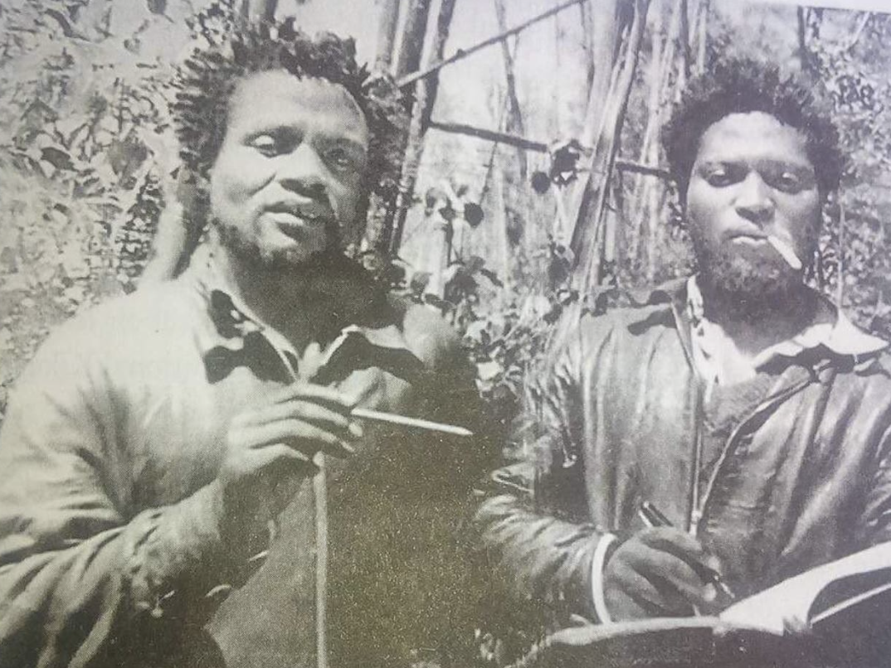

Some men are born into history. Others forge it with their bare hands, their blood, and an unyielding belief that freedom is not a gift to be waited upon, but a right to be seized. Dedan Kimathi Waciuri was such a man a towering figure of courage, sacrifice, and unwavering patriotism who dared to challenge the might of the British Empire so that the people of Kenya might one day stand tall on their own soil. This is a tribute to his life, his struggles, his loves, and his eternal legacy.
Dedan Kimathi was born on October 31, 1920, in Tetu, Nyeri District, in the shadow of Mount Kenya; a mountain the Gikuyu people regarded as the sacred dwelling place of God. He was born Kimathi wa Waciuri into a peasant Gikuyu family. His father died when he was still young, leaving his mother to raise him in conditions of grinding poverty under colonial rule. Despite his humble beginnings, Kimathi demonstrated an extraordinary hunger for knowledge. He attended several mission schools, including Karuna-ini School and later Karugumo School, where he excelled academically. His sharp intellect, eloquence, and natural leadership ability were evident even as a child. He devoured books, memorised scripture, and developed a powerful command of language that would later make him one of the most compelling voices of the independence movement. His early encounters with colonial injustice, watching Kenyan land seized by white settlers, seeing his people treated as second-class citizens in their own homeland; planted seeds of resistance deep within him. The young Kimathi observed, learned, and quietly burned. Kimathi’s personal life was defined by deep love and profound sacrifice. He married Mukami Kimathi, a woman of remarkable courage who became not only his life partner but his comrade-in-arms. Mukami was steadfast through the most perilous years of the Mau Mau uprising, supporting Kimathi’s mission even as the colonial government hunted him relentlessly through the forests of Mount Kenya. Their union was a partnership of purpose — built not merely on affection, but on a shared vision of a free Kenya. Mukami endured immense hardship, including imprisonment by British authorities. After Kimathi’s capture, she fought tirelessly for years to have his name honoured and to secure justice for his memory. She became a symbol of the sacrifices made by the women of the independence struggle — often forgotten, never truly celebrated. Together they had children, though the family was torn apart by the brutal realities of colonial repression. Kimathi also formed deep bonds of brotherhood with his fellow freedom fighters in the forest. He was beloved, feared, and respected in equal measure by those who fought alongside him. He inspired fierce loyalty; not through intimidation, but through personal conviction, courage, and a powerful sense of shared destiny. By the late 1940s, Kimathi had joined the Kenya African Union (KAU) and become a fervent advocate for African rights. As it became clear that peaceful petition would not move the colonial government, Kimathi took a decisive step into armed resistance. He became one of the foremost military commanders of the Land and Freedom Army — known to the world as the Mau Mau — which launched its uprising in earnest in 1952. Operating from the dense forests of the Aberdares and Mount Kenya, Kimathi rose to become the Supreme Commander and Field Marshal of the Mau Mau forces. He was a military strategist of extraordinary skill, organising guerrilla operations against British forces and loyalist Home Guards while keeping his fighters disciplined, motivated, and ideologically committed in extraordinarily harsh conditions. Beyond military leadership, Kimathi was an ideological architect. He established the Kenya Parliament — a governing body within the forest that created laws, resolved disputes, and maintained order among the freedom fighters. This remarkable institution demonstrated that Kimathi’s vision went far beyond warfare; he was building the foundations of a self-governing people even before independence was achieved. The British response was ferocious. They declared a State of Emergency in 1952, detained tens of thousands of Kenyans in brutal concentration camps, and poured enormous military resources into destroying the Mau Mau. Kimathi evaded capture for years, becoming a legend; almost mythical, in the minds of both his followers and his pursuers.
Dedan Kimathi’s achievements were forged under conditions of unimaginable difficulty, and their significance cannot be overstated: Military Leadership: As Field Marshal of the Land and Freedom Army, Kimathi led one of the most sustained and effective anti-colonial armed insurgencies in African history. He organised thousands of fighters, coordinated complex guerrilla operations, and kept a resistance alive for years against overwhelming British military force. Political Vision: Kimathi established the Kenya Parliament in the forest — a functioning governance structure that regulated the conduct of the freedom fighters and laid out a vision for an independent Kenya. He wrote extensively, including letters and manifestos demanding land rights, political representation, and human dignity for African people. Inspirational Symbol: Kimathi’s resistance proved to the world — and to Kenyans themselves — that colonialism was neither permanent nor invincible. His struggle directly contributed to the political pressure that led Britain to negotiate Kenyan independence, which was achieved on December 12, 1963. He lit a fire that could not be extinguished. Pan-African Legacy: Kimathi’s struggle resonated across the African continent and inspired freedom movements far beyond Kenya’s borders. He became a symbol of African resistance, dignity, and the refusal to accept subjugation — a figure whose name was spoken with reverence by liberation movements from Tanzania to South Africa.
On October 21, 1956, a wounded and exhausted Dedan Kimathi was captured near Nyeri by a Kenyan police officer working for the British colonial forces. His capture marked the effective end of the Mau Mau’s armed campaign. He was tried in a colonial court — a court that had no moral authority to judge a man fighting for the freedom of his own people — and sentenced to death. On February 18, 1957, Dedan Kimathi Waciuri was hanged at Kamiti Maximum Security Prison in Nairobi. He was 36 years old. The colonial authorities buried him in an unmarked grave within the prison grounds, hoping, perhaps, that anonymity might silence his memory. They could not have been more wrong. He faced his death as he had faced his life — with courage, dignity, and defiance. In the end, the British Empire’s greatest fear was not the man in the forest with a rifle, but the idea he carried — the idea that Kenya belonged to Kenyans. Enduring Legacy Today, Dedan Kimathi is honoured as a national hero of Kenya. A statue of him stands proudly at the intersection of Kimathi Street and Mama Ngina Street in the heart of Nairobi — fist raised, gaze resolute, facing forward toward the future he died to create. Schools, streets, and institutions across Kenya bear his name. His story has been told in literature, theatre, and film. The celebrated Kenyan writers Ngũgĩ wa Thiong’o and Micere Mügo immortalised him in their powerful play The Trial of Dedan Kimathi, ensuring that his voice — his demands for justice, land, and freedom — would echo through generations. In 2007, the Kenyan government formally honoured Kimathi with the posthumous award of Field Marshal of the Kenya Army — recognition, however delayed, of his supreme sacrifice. His widow Mukami continued to seek the recovery of his remains, a quest that reflects the unfinished business of fully honouring those who gave everything for Kenya’s freedom.
“You can imprison our bodies but never our souls.”
— Dedan Kimathi Waciuri


